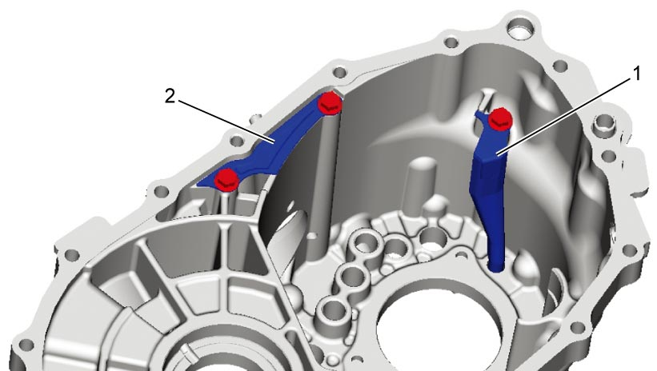
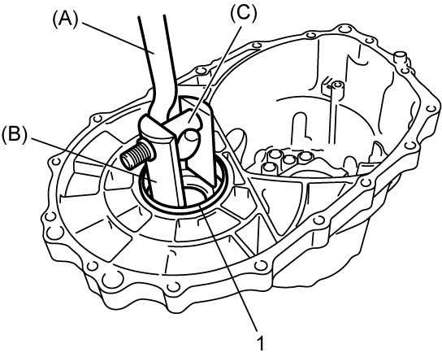
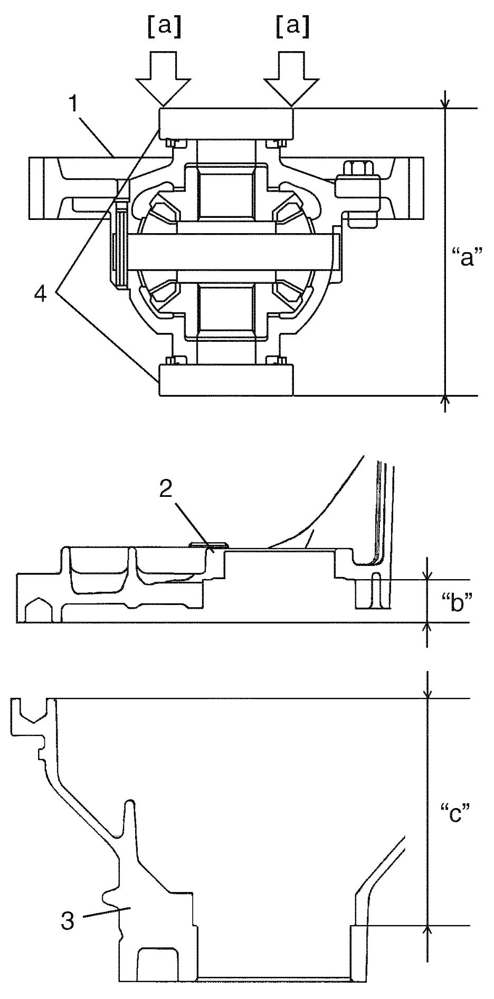
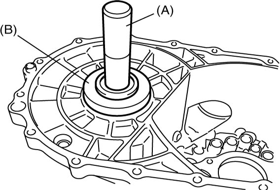

5B
| Transaxle Left Case Disassembly and Reassembly |
Disassembly
1)Remove oil gutter (1) and breather cover plate (2), if necessary.


 "Expand image")
2)Remove differential side oil seal. 
3)Remove differential side bearing outer race (1) using special tools, and then remove shim.

 "Expand image")
Reassembly
1)Install oil gutter (1) and breather cover plate (2), if removed.
Breather cover plate bolt (b): 10 N·m (1.0 kgf-m, 7.5 lbf-ft)
NOTICE:
The oil gutter bolts and breather cover plate bolts are precoated with adhesive. If these bolts are reused, they may work loose.
Replace the oil gutter bolts and breather cover plate bolts with new ones whenever they are removed.
Tightening torque
Oil gutter bolt (a): 10 N·m (1.0 kgf-m, 7.5 lbf-ft)Breather cover plate bolt (b): 10 N·m (1.0 kgf-m, 7.5 lbf-ft)
 "Expand image")
2)Select differential side shim as follows.
a)Keep pushing outer race (4) with force of 35 N (3.6 kgf, 7.9 lbf) by hand and turn differential case 10 times or more.
b)Measure distance “a” of differential assembly (1).
c)Measure depth “b” of left case (2) and “c” of right case (3).
d)Calculate shim thickness by the following formula.
| Shim thickness = Depth “b” + Depth “c” – Distance “a” |

 "Expand image")
| [a]: | Push with force of 35 N (3.6 kgf, 7.9 lbf) |
3)Select shim closest to calculated shim thickness from the following available sizes.
Available shim thickness
| Calculated shim thickness | Applicable shim |
|---|---|
| 0.800 – 0.839 mm (0.03150 – 0.03303 in.) |
1.00 mm (0.0394 in.) |
| 0.840 – 0.879 mm (0.03307 – 0.03460 in.) |
1.04 mm (0.0409 in.) |
| 0.880 – 0.919 mm (0.03465 – 0.03618 in.) |
1.08 mm (0.0425 in.) |
| 0.920 – 0.959 mm (0.03622 – 0.03775 in.) |
1.12 mm (0.0441 in.) |
| 0.960 – 0.999 mm (0.03780 – 0.03933 in.) |
1.16 mm (0.0457 in.) |
| 1.000 – 1.039 mm (0.03938 – 0.04090 in.) |
1.20 mm (0.0472 in.) |
| 1.040 – 1.079 mm (0.04095 – 0.04248 in.) |
1.24 mm (0.0488 in.) |
| 1.080 – 1.119 mm (0.04252 – 0.04406 in.) |
1.28 mm (0.0504 in.) |
| 1.120 – 1.159 mm (0.04410 – 0.04562 in.) |
1.32 mm (0.0520 in.) |
| 1.160 – 1.199 mm (0.04567 – 0.04720 in.) |
1.36 mm (0.0535 in.) |
| 1.200 – 1.239 mm (0.04725 – 0.04877 in.) |
1.40 mm (0.0551 in.) |
| 1.240 – 1.279 mm (0.04882 – 0.05035 in.) |
1.44 mm (0.0567 in.) |
| 1.280 – 1.319 mm (0.05040 – 0.05192 in.) |
1.48 mm (0.0583 in.) |
| 1.320 – 1.359 mm (0.05197 – 0.05350 in.) |
1.52 mm (0.0598 in.) |
| 1.360 – 1.399 mm (0.05354 – 0.05508 in.) |
1.56 mm (0.0614 in.) |
| 1.400 – 1.439 mm (0.05512 – 0.05665 in.) |
1.60 mm (0.0630 in.) |
| 1.440 – 1.479 mm (0.05670 – 0.05822 in.) |
1.64 mm (0.0646 in.) |
| 1.480 – 1.529 mm (0.05827 – 0.06019 in.) |
1.68 mm (0.0661 in.) |
4)Put shim, and then install differential side bearing outer race using special tools.

 "Expand image")
5)Install differential side oil seal.